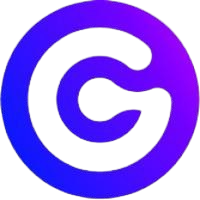
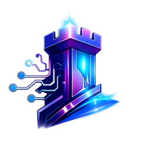

ABOUT
Architecte logiciel expérimenté, guidé par la conviction que la simplicité est la sophistication ultime. Spécialisé dans la modernisation et la rationalisation de systèmes d'information complexes vers des architectures distribuées, sécurisées et maintenables. Je conçois et développe aujourd'hui au quotidien avec des agents LLM, selon une méthode que j'appelle l'intentional engineering : l'intention est écrite avant le code, dans des specs, des ADR et des schémas as code, et des contrôles bloquants vérifient ce qui doit être vrai plutôt que de s'en remettre à la relecture. Habitué à accompagner les équipes dans la définition de socles techniques, la gouvernance d'API et la mise en œuvre de solutions pérennes.
WORK EXPERIENCE

Lead Architect, Gluendo
2026-Jan - Present
Architecte consultant, actuellement lead architect sur le programme Magellan, une plateforme d'infrastructure et d'applications d'entreprise.
HIGHLIGHTS
- Lead architect de l'architecture cible sur les domaines réseau, datacentre, cloud, plateforme de conteneurs, IAM, PKI, software factory, observabilité et cybersécurité.
- Mise en place des décisions d'architecture comme artefacts gouvernés et relus : ADR, LLD et HLD versionnés dans Git, référencés entre eux, et validés en CI au même titre que le code qu'ils gouvernent.
- Conception et bootstrap de la plateforme de conteneurs sur bare metal, du premier cluster au provisioning des nœuds de charge : RKE2 et Rancher, réconciliation GitOps avec ArgoCD, réseau Cilium et MetalLB.
- Donnée d'infrastructure faisant autorité as code, avec NetBox comme source de vérité CMDB réconciliée par OpenTofu, un plan publié sur chaque pull request et une détection de dérive planifiée.
- Politique d'accès réseau as code, avec un contrôle bloquant qui échoue dès que le périmètre déclaré et le périmètre réellement appliqué divergent.
- Réalisation d'un opérateur Kubernetes qui provisionne les tenants S3 StorageGRID, leurs buckets et leurs credentials depuis des ressources custom, en remplacement des actions manuelles dans la console de l'éditeur.
- Construction de la software factory de la plateforme (Forgejo auto-hébergé, registry, portail de documentation, SSO Keycloak, runners de CI) avec des templates de golden path, des linters partagés et des conventions lisibles par la machine, pour que les agents de code travaillent sous les mêmes contrôles bloquants que l'équipe.
TECHNOLOGIES
- RKE2
- Rancher
- ArgoCD
- Cilium
- OpenTofu
- NetBox
- Keycloak
- OpenBao
- OpenTelemetry
- Go
- Ansible
- Forgejo
Architecte API / Staff Engineer, NumSpot
2023-Nov - 2025-Dec
Conception d'un socle technique unifié pour un fournisseur européen de cloud souverain, garantissant la cohérence, la sécurité et la pérennité des architectures. Responsable des stratégies d'architecture et d'innovation autour des services cloud natifs et de la gouvernance des API.
HIGHLIGHTS
- Définition du standard d'API et accompagnement des équipes vers une conception contract-first, avec la spécification OpenAPI comme source de vérité.
- Architecture de la gateway API en Go et accompagnement de l'équipe qui l'a construite, couche d'authentification et d'autorisation comprise, par la revue de conception et de code.
- Définition d'une architecture cible modulaire et sécurisée pour des services cloud natifs et des offres PaaS, formalisée en ADR, HLD et LLD.
- Accompagnement des équipes dans l'application des bonnes pratiques d'architecture, de sécurité et d'automatisation.
- Animation d'un cadre de gouvernance technique et définition des socles communs au sein du SI.
- Promotion des technologies open source et alignement avec les standards de sécurité (SecNumCloud).
- Participation à la qualification de conformité et à la définition des politiques techniques du cloud souverain.
TECHNOLOGIES
- Golang
- OpenAPI (OAS)
- Kubernetes
- Terraform
- Scalar
- pb33f
- Docusaurus
- GitLab
Architecte API Senior, Back Market
2022-Sep - 2023-Nov
Définition de la stratégie API, de l'architecture et des bonnes pratiques communautaires pour une plateforme e-commerce en forte croissance, en pilotant des initiatives API-first et la modernisation de l'écosystème technique.
HIGHLIGHTS
- Définition et évangélisation de la vision API transversale, animation d'un API Chapter, rédaction de guides dans Backstage et accompagnement des équipes sur les principes DDD et API-first.
- Conception d'une stratégie API à trois couches (Experience, Composite, Domain) et d'architectures orientées événements (CQRS, SAGA).
- Pilotage des POC de solutions d'API Gateway (KrakenD) et modernisation des communications interservices.
- Communication technique claire et adaptée aux différents interlocuteurs (développeurs, responsables sécurité, métiers)
- Refonte du modèle d'autorisation de la plateforme à l'aide d'Open Policy Agent (OPA), avec mise en place des points d'application et de décision de policies.
TECHNOLOGIES
- Python
- Django
- Golang
- AWS
- GCP
- Node.js
- GitHub
- KrakenD
- Spotlight
- Backstage
- Docker
- Excalidraw
- Jira
Architecte Solutions, The Warehouse Group
2021-May - 2022-Jun
Conception de solutions d'intégration et de streaming à grande échelle, modernisation de la gestion des API et pilotage d'initiatives DevOps pour un grand groupe de distribution.
HIGHLIGHTS
- Conception et mise en œuvre de la solution d'intégration principale pour une nouvelle plateforme de gestion des données de référence, avec Confluent Kafka, Azure Kubernetes Service (AKS) et des microservices Spring Boot.
- Amélioration de la plateforme de gestion des API avec Azure APIM, intégrant OAuth2.0, OpenAPI et une gouvernance stricte des schémas JSON.
- Promotion d'une architecture découplée et orientée streaming basée sur Confluent Cloud Kafka et les principes d'Infrastructure as Code.
- Diffusion des bonnes pratiques DevOps via la mise en place de pipelines CI/CD et la contribution à une plateforme développeur type 'Golden Path' inspirée de Backstage.
TECHNOLOGIES
- Java
- JavaScript
- Azure
- Swagger
- Backstage
- Atlassian
- Json-schema
Advisor Technique, Qard
2021-Feb - 2025-Jan
Rôle d'advisor mené en parallèle de mes missions principales, avec du mentorat auprès de l'équipe d'ingénierie et la définition de la stratégie technique d'une fintech.
HIGHLIGHTS
- Accompagnement de l'équipe d'ingénierie sur la conception et la livraison des produits financiers.
- Conseil sur le développement d'API évolutives et l'architecture de systèmes sécurisés et performants.
- Contribution aux décisions de stratégie technique et d'intégration des systèmes.
TECHNOLOGIES
- PHP
- AWS
- GCP
- S3
- Notion
- Gitlab
Architecte Solutions Digitales, University of Auckland
2018-Oct - 2021-May
Modernisation des plateformes numériques et des solutions d'intégration pour la principale université de Nouvelle-Zélande, en s'appuyant sur les technologies cloud natives et l'analyse de données avancée.
HIGHLIGHTS
- Conception d'un Data Hub temps réel sur AWS (Kafka, Elasticsearch, ECS, Fargate) pour centraliser les données de l'université.
- Refonte de la plateforme de diffusion vidéo pour 85+ pétaoctets de contenu via AWS S3, CloudFront et Lambda.
- Modernisation de la plateforme IAM avec AWS Cognito (OAuth2.0/OIDC) et rénovation de la couche de gestion d'API avec Kong Enterprise.
- Mise en place de modèles 'Integration By Convention' basés sur Kafka et des fonctions serverless, réduisant la dépendance aux ESB traditionnels.
Architecte Digital, ENGIE B2C
2016-Mar - 2018-Oct
Conception et pilotage des architectures digitales orientées clients, accompagnant la transformation cloud et l'innovation d'un grand groupe énergétique.
HIGHLIGHTS
- Conception d'architectures cloud natives pour les plateformes B2C, applications mobiles et intégrations IoT sur AWS.
- Pilotage d'évaluations techniques et de POC pour la gestion d'API (Kong, Gravitee, Tyk) et les plateformes de données modernes (Kafka, CockroachDB).
- Promotion de la culture DevOps via la création d'une 'CI/CD Factory' basée sur Jenkins, Docker, Rancher et Ansible.
- Rôle d'animateur agile, promouvant Scrum, TDD/BDD et les principes de Domain-Driven Design.
Architecte Logiciel et Scrum Master, Ministère du Travail
2014-Mar - 2016-Mar
Conception et mise en œuvre d'une plateforme nationale de formation (CPF) pour 42 millions d'utilisateurs, tout en modernisant les systèmes existants.
HIGHLIGHTS
- Urbanisation du SI autour d'une architecture REST composée de plus de 10 applications.
- Implémentation de composants techniques clés, dont Spring Batch, et d'une plateforme IAM basée sur OpenAM et OpenDJ.
- Encadrement des processus agiles en tant que Scrum Master, avec mise en place d'une chaîne CI/CD complète (Jenkins, Maven, SonarQube, Jira).
- Accompagnement du Product Owner dans la planification et la gestion des ressources internes et externes.
Ingénieur Logiciel, Caisse des Dépôts et Consignations
2009-Sep - 2014-Mar
Développement et maintenance d'applications pour la principale institution financière publique française, avec un focus sur la performance, l'IHM et l'architecture SOA.
HIGHLIGHTS
- Développement d'applications JavaScript et d'interfaces utilisateur (JSP, HTML, CSS).
- Mise en place d'une architecture SOA via JAX-WS et SoapUI pour les services SOAP.
- Suivi de la qualité du code avec SonarQube et résolution d'incidents de performance en production.
Stagiaire Informatique, Restopolitan
2008-Apr - 2008-Sep
Support technique et maintenance pour une startup spécialisée dans la gestion de réservations de restaurants.
HIGHLIGHTS
- Maintenance et installation de systèmes informatiques.
- Support aux logiciels internes de gestion des réservations.
PROJECTS

Founder & CTO, Barbacane
2026-Jan - Present
Développement d'une gateway API et IA bidirectionnelle open source en Rust, où les spécifications OpenAPI et AsyncAPI sont la seule configuration.
HIGHLIGHTS
- Conception du modèle spec-driven : les spécifications sont compilées en artefacts et appliquées comme contrats à l'exécution, sans DSL propriétaire.
- Réalisation du runtime de plugins WebAssembly et de son SDK, avec séparation du control plane et du data plane.
TECHNOLOGIES
- Rust
- WebAssembly
- OpenAPI
- AsyncAPI
- PostgreSQL
SKILLS
Architecture Logicielle
Cloud & DevOps
API & Intégration
Programmation & Frameworks
Ingénierie augmentée par l'IA
Gestion des Identités et Accès (IAM)
Observabilité & Sécurité de la chaîne logicielle
Bases de Données
Méthodologies & Outils
EDUCATION
Diplôme d'Ingénieur, Réseaux & Système d'information
ENSEIRB-MATMECA
Brevet de Technicien Supérieur, Informatique et Réseaux pour l'Industrie et les Services techniques
Lycée Jules Ferry Versailles
DUT, Génie Électronique et Informatique Industrielle
IUT de Ville d'Avray
Certifications
AWS Solution Architect - Associate - Amazon Web Services
2024-Mar
Professional Scrum Developer - Scrum.org
2015-Jan
Certificat de Premiers Secours - Croix-Rouge Française
2012-Aug
LANGUAGES
🇫🇷 Français
Level: Langue maternelle
🇬🇧 Anglais
Level: Courant
INTERESTS
Bricolage, brassage maison
Squash et tennis de table
Randonnée et trekking
Dégustation de vins et gastronomie
Festivals de musique et cinéma
REFERENCES
Nico s'est très bien intégré à notre équipe d'Architecture de Solutions et a rapidement fait la différence. Nico est un technologue talentueux et hautement qualifié qui apportera de la valeur à tout environnement de travail.
- Tim Chaffe, Architecte en Chef IT & Digital, University of Auckland
Nicolas Dreno a été un employé de The Warehouse Group depuis mai 2021. Ce fut un plaisir de travailler avec lui, apportant son souci du détail et sa passion à tout ce dans quoi il s'est impliqué. Il a été crucial dans la mise en œuvre de notre plateforme de gestion des données de référence (MDM), l'évolution de notre plateforme de streaming d'événements en temps réel (Confluent Kafka), le découplage des API internes et externes à l'aide de la gestion d'API cloud (Azure et AWS), la croissance et l'éducation dans nos domaines de gouvernance des données, l'amélioration des compétences en modélisation des données et en automatisation DevOps (pour n'en citer que quelques-uns). Ses compétences en communication et relationnelles sont excellentes, et il a été un leader de confiance en architecture, en ingénierie logicielle et en gestion des données. Je peux fortement recommander Nicolas pour tout rôle lié à l'architecture technique ou à l'ingénierie car il est incroyablement intelligent et compétent dans tous les domaines techniques sur lesquels j'ai travaillé avec lui. Il est très respecté ici chez TWG à tous les niveaux de direction et au sein des équipes et nous manquera énormément. Nous lui souhaitons le meilleur dans ses futures aventures et espérons que nos chemins se croiseront à nouveau un jour.
- Jon Sandberg, Domain Chapter Lead, TWG
J'ai eu l'opportunité et la chance de travailler avec Nicolas sur la transformation et l'agilité du système et il m'a très concrètement aidé à traduire notre schéma directeur en projets concrets (API / DATA / DevSecOps). Il a été aussi un vrai évangéliste du développement agile des applications à forte valeur métier. C'est très précieux de travailler avec une personne comme Nicolas qui allie les Soft Skills et les Hard Skills avec un vrai pragmatisme au moment de l'exécution.
- Ibrahima Ndiaye, Responsable de l'Architecture, ENGIE B2C
J'ai eu la chance d'embaucher Nicolas Dreno en 2018 en tant qu'Architecte de Solutions Digitales. En constituant une nouvelle équipe d'architectes à partir de zéro, j'ai cherché loin et large des architectes obsédés par la vision client, axés sur les résultats, et ayant en même temps un profond intérêt pour l'ingénierie et la technologie afin de résoudre toutes sortes de défis business. Et nous en avions beaucoup à cette époque. Nicolas correspondait presque parfaitement au profil. Nicolas avait ce désir insatiable d'apprendre et d'expérimenter, puis de l'utiliser pour développer des capacités internes en convertissant les apprentissages en modèles documentés et acceptés pour les équipes de livraison et les autres Architectes de Solutions. Je partageais profondément son aversion pour le mélange des buzz words dans les discussions. Au lieu de cela, il est resté concentré sur la résolution de certains des défis les plus urgents qu'il a relevés, comme la mise en place de plateformes d'intégration dans le cloud AWS, la création d'un écosystème d'API sécurisé et d'un hub de données, pour n'en nommer que quelques-uns. Désolé de te voir partir, une véritable perte pour nous ici en Aotearoa !
- Ratan Kumar, Responsable de l'Architecture, University of Auckland
J'ai travaillé avec Nico pendant un an sur des solutions complexes de gestion des données de référence. J'ai été impressionné par la capacité de Nico à se mettre rapidement à niveau. Il a façonné et perfectionné l'équipe d'intégration, l'a gerée pour livrer une solution de haute qualité et durable tout en étant un précurseur des nouvelles technologies et processus. Nico est un professionnel orienté qualité, pragmatique dans sa réflexion, un manager terre à terre, digne de confiance et respecté par les parties prenantes seniors et les membres des équipes. Je recommande fortement Nico pour l'architecture d'intégration complexe.
- Tarek Ahmed, Chef de Projet, TWG
Nicolas Dreno a travaillé dans mon équipe de janvier 2012 à mars 2016, date à laquelle il a démissionné en très bons termes d'ICDC pour raisons familiales. A l'époque, j'étais responsable de l'équipe de Direction de Programmes, en charge de projets stratégiques majeurs. Très au fait des nouvelles pratiques technologiques, Nicolas s'est généralement positionné en leader, partageant et expliquant ses idées. Tout au long de sa carrière à ICDC, Nicolas n'a pas hésité à saisir les opportunités pour progresser à tous les niveaux (fonctionnel, technique, méthodologique, relationnel, etc.), quitte à remettre en question les cadres existants. Les résultats furent particulièrement visibles sur le projet CPF pour le Ministère du Travail, où il s'est rapidement imposé comme un pilier de l'équipe. Dès lors, il n'a pas hésité à promouvoir les pratiques innovantes au service des projets et plus largement de l'entreprise. Ce fut notamment le cas pour le développement et la mise en œuvre de solutions B2B et de confiance avec des partenaires externes (web services, fédération d'identité, France Connect, etc.). Doté d'un fort esprit lean et désireux de travailler plus efficacement, Nicolas n'a eu aucune difficulté à évoluer dans un environnement agile, cherchant l'amélioration continue pour identifier de nouvelles méthodes et outils et les faire connaître à son entourage. Nicolas a quitté ICDC avec une expertise architecturale significative, faisant de lui un expert technique sur de nombreux sujets. Depuis, j'ai eu plusieurs occasions d'échanger avec Nicolas sur son parcours et ses projets de carrière. Je recommande Nicolas pour tout poste de conception informatique en tant qu'architecte technique et fonctionnel, sans aucun doute quant à sa capacité à s'adapter à tout nouveau contexte.
- Hélène Piquer, Responsable de Département, Ministère du Travail (ICDC)
Nicolas a dirigé l'équipe de développement Scrum qui a construit le CPF. Il a été le moteur de la mise en œuvre de Scrum et de ses valeurs au sein de l'équipe Agile, ce qui représentait un énorme défi dans le contexte d'Informatique CDC.
- Olivier Ledru, Coach Agile, Caisse Des Dépôts et Consignations